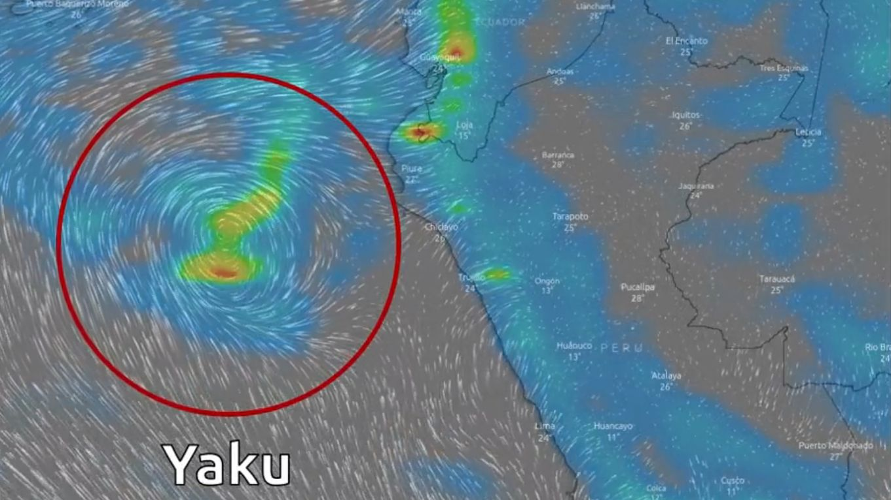

El ciclón yaku es un fenómeno natural que ha causado estragos en varias regiones del Perú, especialmente en la costa norte. Se trata de una concentración anormal de nubes que gira en torno a un centro de baja presión atmosférica, generando lluvias torrenciales, vientos fuertes, oleaje alto y marea de tormenta .
Este fenómeno se originó en el océano Pacífico Sur, cerca de la línea ecuatorial, y se desplazó hacia el sur afectando a Ecuador y Perú. Según el Servicio Nacional de Meteorología e Hidrología del Perú (Senamhi), el ciclón yaku alcanzó su máxima intensidad entre los días 11 y 13 de marzo, cuando provocó precipitaciones de moderada a extrema intensidad en la costa y sierra .
Las consecuencias del ciclón yaku han sido devastadoras para miles de personas que han perdido sus viviendas, cultivos, animales e infraestructura por las inundaciones y desbordes de ríos. Según el último reporte del Instituto Nacional de Defensa Civil (Indeci) y el Centro de Operaciones de Emergencia Nacional (COEN), hasta el momento se han registrado 60 muertos, 57 heridos y ocho desaparecidos por las lluvias . Además, hay 8.222 damnificados y 33.000 afectados que requieren ayuda humanitaria.
Ante esta situación, la presidenta del Perú Dina Boluarte viajó este sábado 15 de marzo a las regiones más afectadas por el ciclón: Tumbes, Piura, Lambayeque y La Libertad. Allí entregó víveres, carpas, frazadas y otros bienes a los damnificados y coordinó con las autoridades locales las acciones para atender la emergencia. La mandataria también anunció que se declarará el estado de emergencia en las zonas más críticas para facilitar la reconstrucción.
El Senamhi informó que se puede seguir en vivo la trayectoria del ciclón Yaku a través de la plataforma Windy, que brinda información sobre las condiciones meteorológicas en todo el mundo. Asimismo recomendó tomar medidas preventivas como evitar cruzar ríos o zonas inundables; almacenar agua potable; tener un kit de emergencia con alimentos no perecibles; proteger los techos con plásticos o calaminas; evacuar hacia zonas seguras ante cualquier amenaza; entre otras.
El ciclón Yaku es un evento climático poco frecuente en esta parte del mundo pero que demuestra los efectos del cambio climático global. Por ello es importante estar preparados para enfrentar estos desafíos con solidaridad y responsabilidad.
Anuncio: